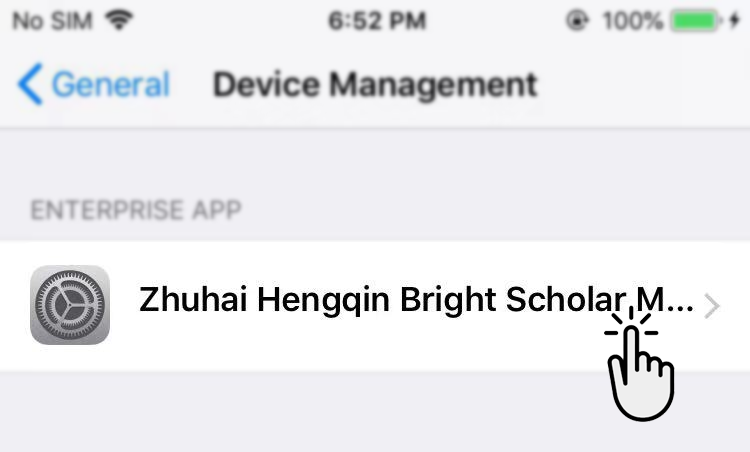

VKToken
Install
After completing the installation
of the VKToken APP,Enter the phone
【Settings】
>
【General】
>
【Device Management】

Confirmation is the description file
of VKToken APP, click "trust"
Once the trust settings are complete,
Go to the VKToken APP!